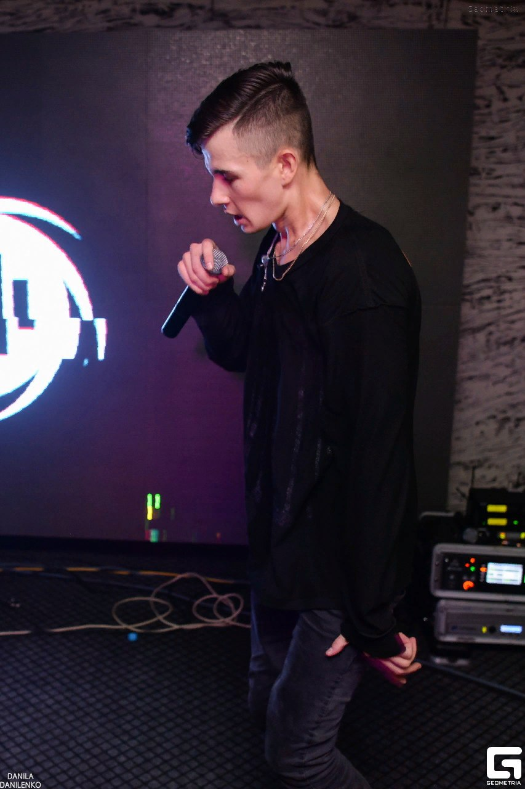
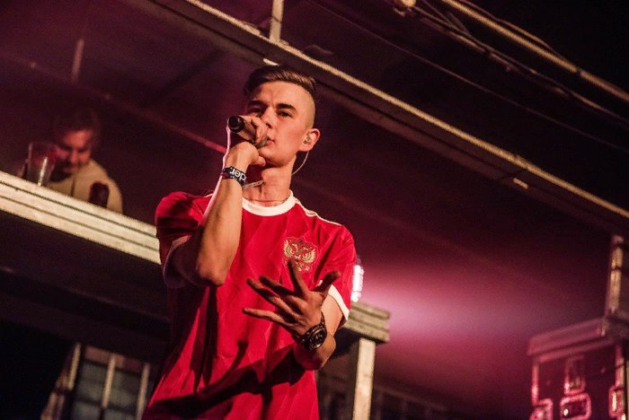
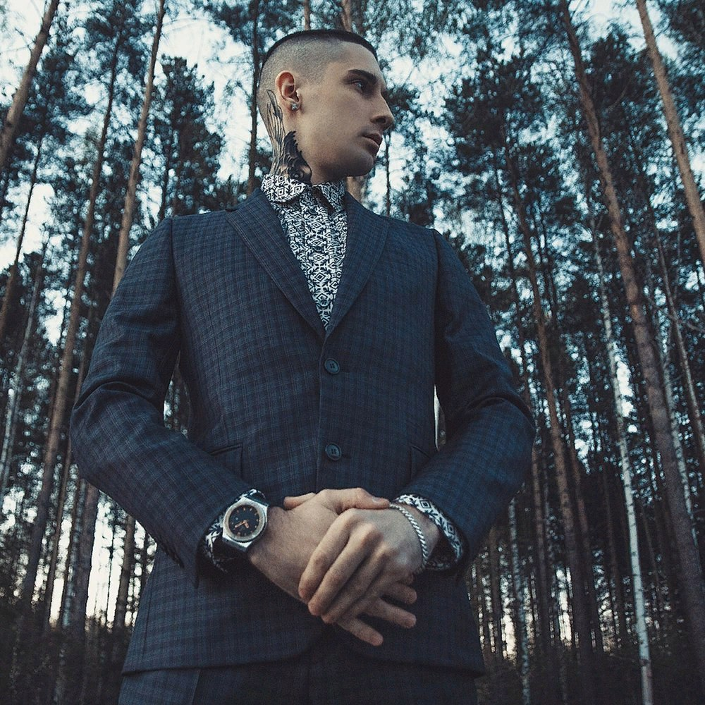
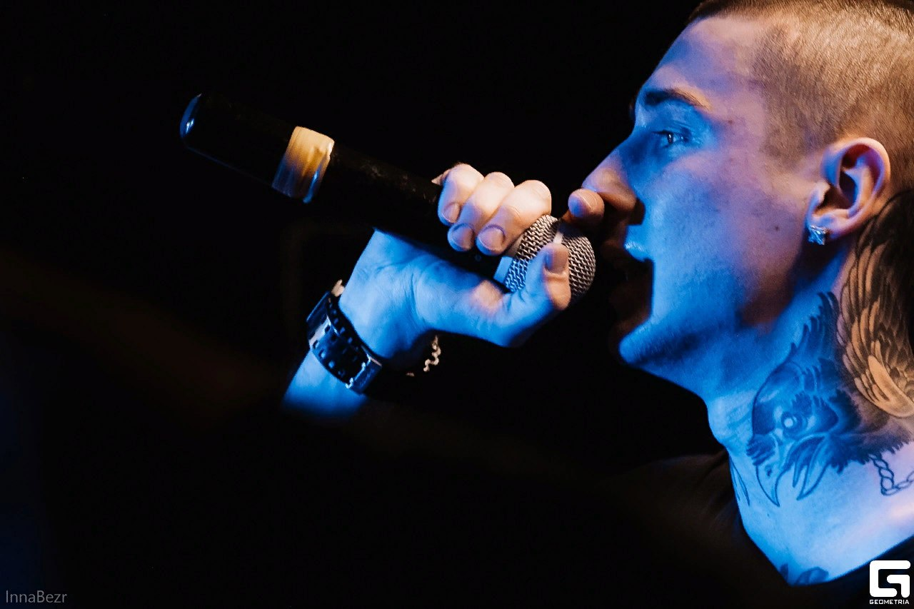
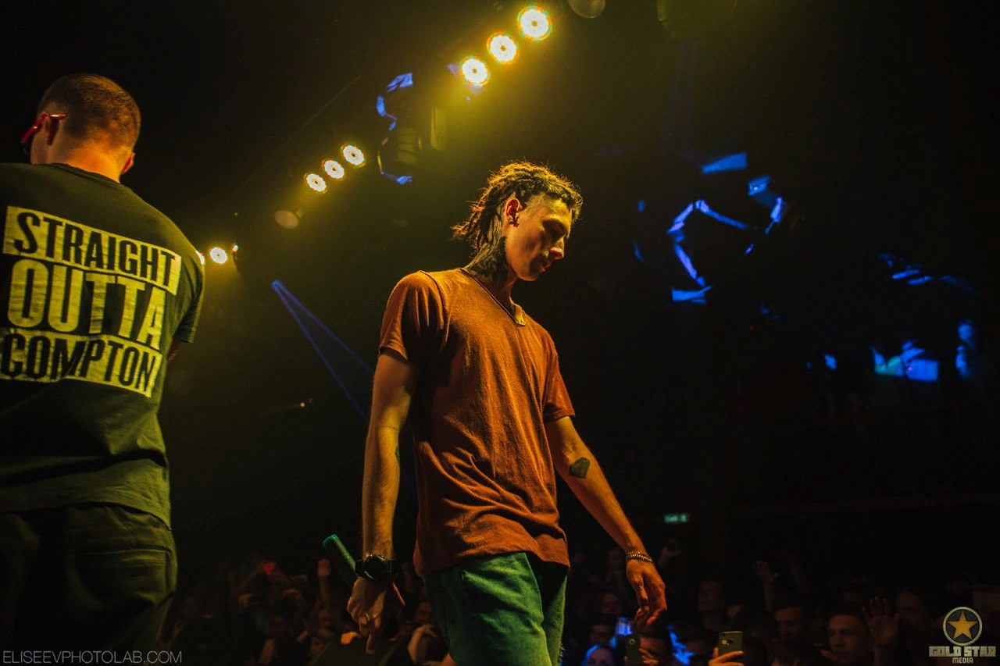

OBLADAET

Молодой грайм-рэпер Obladaet родился и вырос в сибирском городе Иркутске. Будучи подростком Назар покинул родной город и перебрался жить в Санкт-Петербург, где и началось его становление, как рэпера.
Изначально Obladaet позиционировал себя как баттл-рэпер, поэтому начало его творчество пришлось на участие в различных грайм баттлах. Фортуна сразу же сопутствовала Назару — не прошел и год с момента начала его баттловой карьеры, как Obladaet уже одерживает победу в баттле Grime Music Group. После победы на Грайм Мьюзик Назар решает попробовать себя не только в баттловой среде, но и в качестве грайм-исполнителя. Параллельно с участием в баттлах Obladaet начинает готовить свой первый релиз. Первую половину 2015 года об Обладает ничего не было слышно. Но уже осенью, за счет выступлений на Russian Grime Clash Battle Назар снова заставил заговорить о себе. Obladaet уверенно шел по сетке, но в полуфинале в соперники ему в попался Redo, который выбил Облу из борьбы за победу. Не смотря на частые релоадс, баттл Obladaet и Redo получился отменный. Оба рэпера неплохо хайпанули на нем.
В начале 2016 года Назар объявляет о скором выходе своего второго альбома. Свое слово Obladaet сдерживает и в мае выходит вторая крупная работа Облы — «Double Tap». Стоит отметить, что буквально за 5 дней альбом вошел в топ-4 по продажам в Itunes.
В 2017 году Назар продолжил активно работать. В начале года Obladaet засветился на релизе Яникса. А в апреле выпустил новый альбом FILES, на котором даже засветился Markul.
BUMBLE BEEZY

Bumble Beezy, он же Антон Ватлин родился в Казахстане, в городе Павлодаре. На данный момент рэпер проживает в Перми. В начале 2014 года Антонy выпускает дебютный альбом под никнеймом Bumble Beezy — Wasabi. Альбом получается качественным, но в связи с тем, что Бизи на тот момент не был еще никому известен, то и прослушавших Васаби оказалось мало. Но так получилось, что Big Russian Boss и Young PH оценили один из треков «No Hook» Bumble Beezy, в результате чего осенью 2014 года выходит совместный трек рэперов «Черный снег». В 2016 году выходит новый альбом Бамбл Бизи — Васаби 2, который по-настоящему выстрелил. Благодаря релизу Вассаби 2, флоу Бизи даже отметил Оксимирон в своем твиттере.
В сентябре 2016 года выходит самая хайповая работа Антона, третий студийный альбом Bumble Beezy — Deviant, на котором отметился Porchy. Девиант принес Бамбл Бизи много новых слушателей.
Бизи получал приглашения на участие в нескольких баттлах, но всем отказал. Антон объясняет, что ему иногда даже нравится посмотреть рэп-баттлы, но сам принимать в них участие он не намерен.
